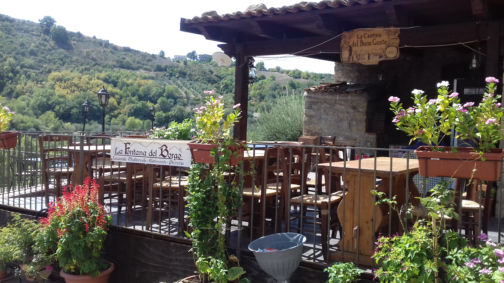
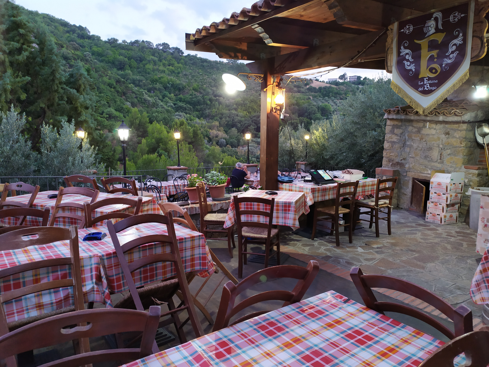
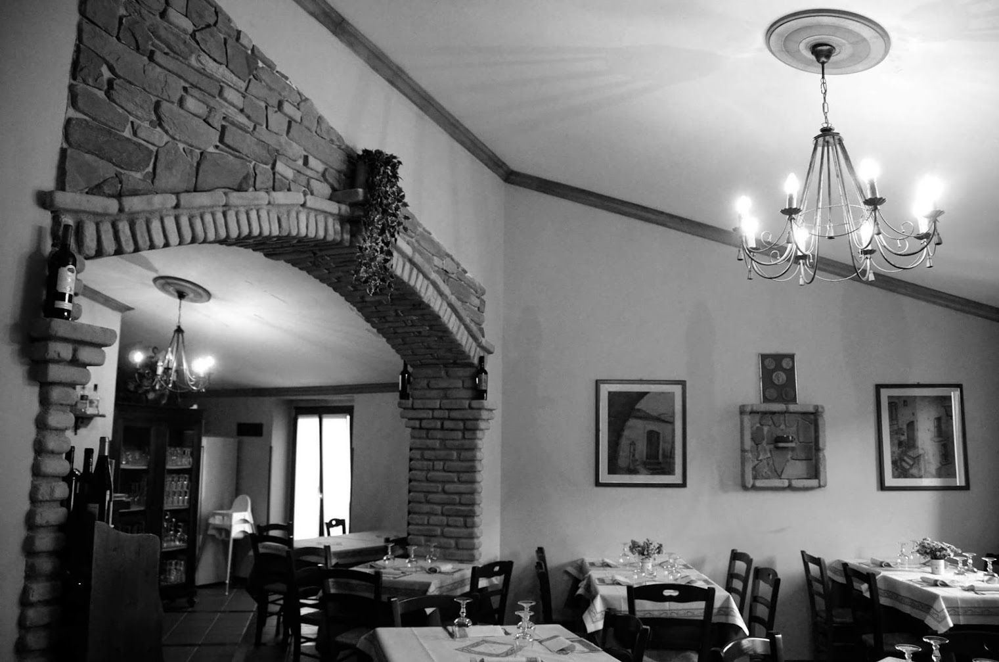
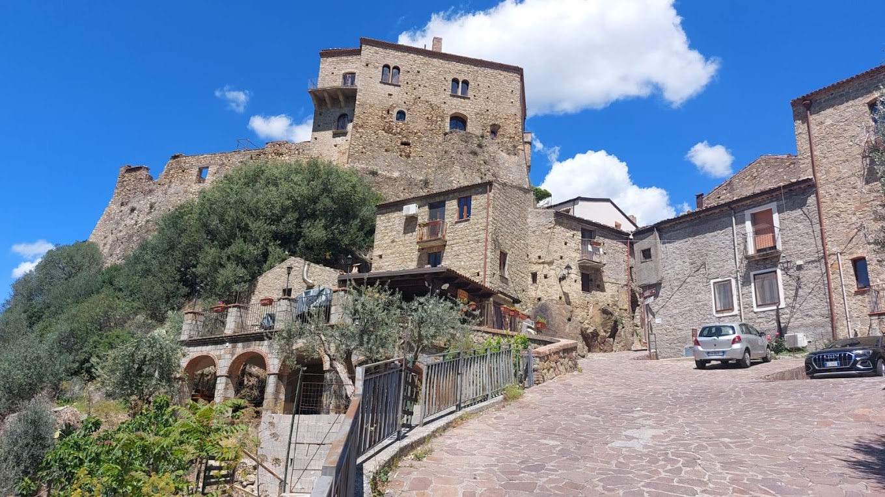
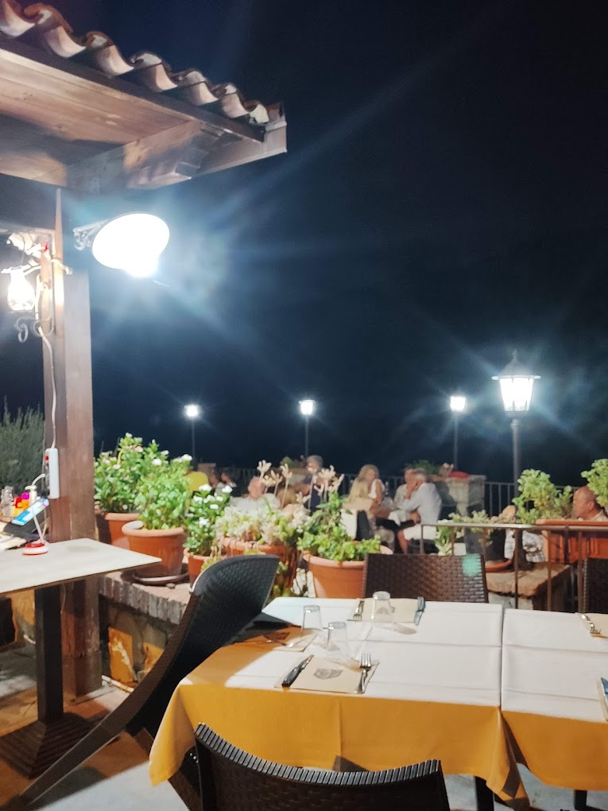
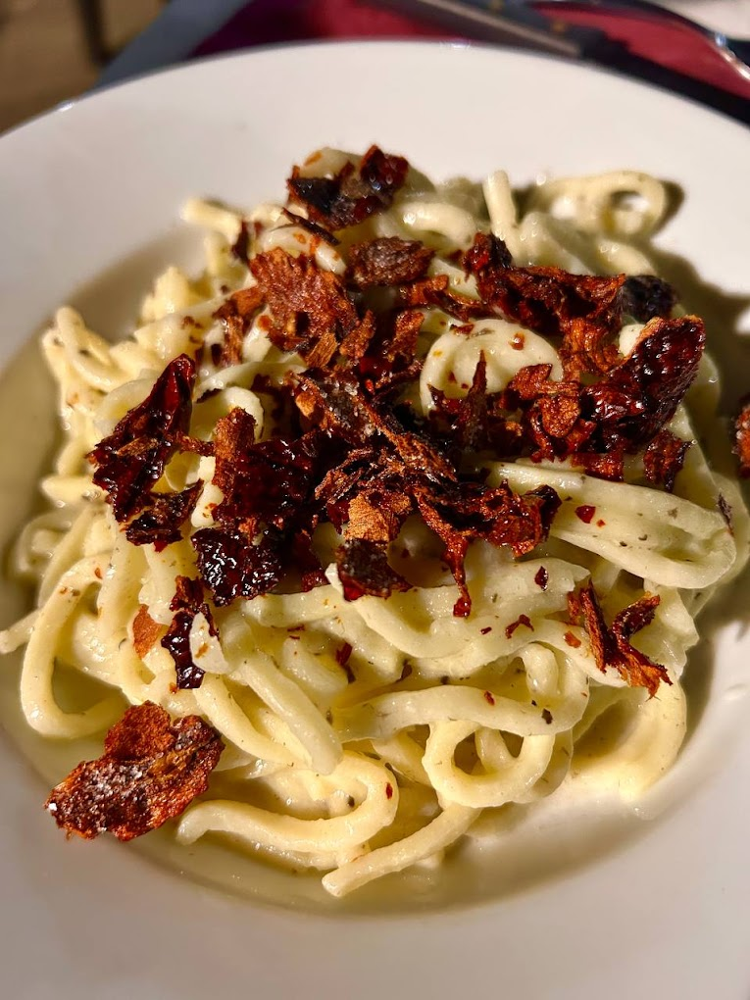
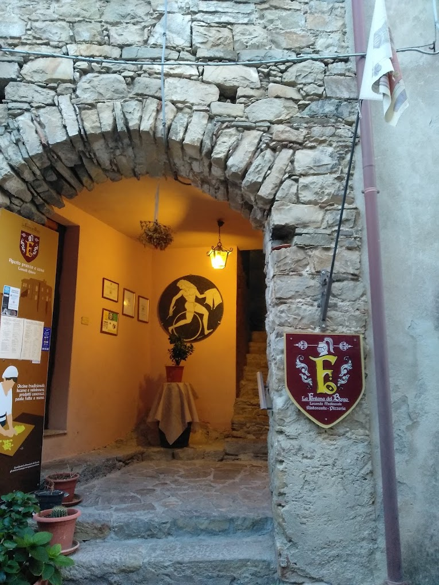

I nostri spazi
Il nostro locale si snoda su due livelli. Al primo piano, incastonato tra le rocce sottostanti l'antico castello medievale di Favale, è situata la Sala: un'accogliente ambiente intimo dove è possibile ammirare il monte Coppolo e il panorama circostante. Fatevi coccolare dai sapori autentici e tradizionali della cucina di Modesta accompagnati da un buon bicchiere di vino che l'oste Mario saprà sapientemente consigliarvi. La sala è dotata di cucina autonoma con forno a gas per degustare, solo a cena, un'ottima pizza napoletana.
Al piano terra nella piazzetta Accannata è invece situata la Terrazza. Circondata dal verde degli ulivi sotto il cielo stellato di Valsinni, la terrazza è il posto perfetto dove trascorrere una serata estiva in compagnia degli amici. Che sia per una pizza napoletana cotta nel forno a legna o un buon piatto di frizzuli, trascorrerete una bellissima serata all'insegna della convivialità e del buon cibo. In concomitanza con la manifestazione dell'Estate di Isabella, godrete dell'animazione dei menestrelli e degli spettacoli sotto le stelle organizzati dalla Pro Loco di Valsinni.
Scorci del locale
Alcuni dettagli della Sala e della Terrazza.








